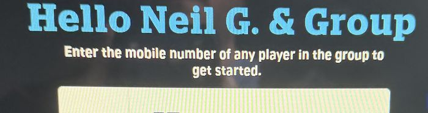
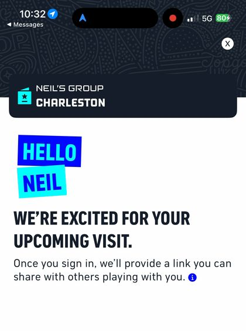
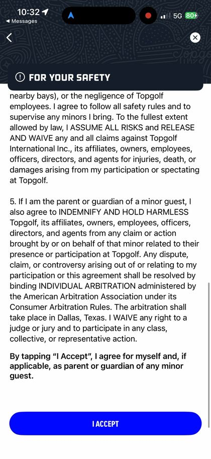
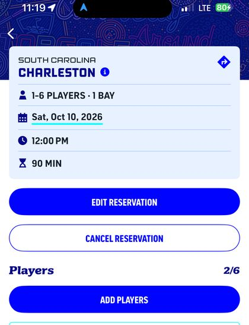

12
The second player’s invite hit a Try Again screen.
RecordedField note
The app sign-in on D2 took nine seconds. The greeting is up at 3 seconds, the waiver with its one button at 8 seconds, and “You’re in! Now, let’s get your group signed in” at 12 seconds. That screen also offers Invite Friends and Add Junior Player. My recollection is that D2 was recorded on the second player’s phone after she installed the app. The screens read “Hello Neil” and “Neil’s Group,” which is the host’s flow, and D1 and D2 cover the same minutes. The frames and my recollection do not agree, and I can’t settle it here.
The invite did not finish. D1 is the invited guest’s phone. It opens on the invite text: “Let’s go to Topgolf Charleston! I just invited you to play at Topgolf Charleston.” At 18 seconds she is on a membership screen. At 94, 219 and 264 seconds the phone clock reads 10:34, 10:36 and 10:37, and the screen reads Try Again under a yellow exclamation mark. It gives no reason, no phone number and no second button.
By 11:19 the reservation read Players 2/6. By my follow-up note she added herself in the app after the web form failed (below), and I could see her in my app by 11:34. I did not record the step itself.
“Still no text. Can’t register 2nd person. No game day notification, email.”

The frames show only the Try Again screen. They do not show the cause.
My guest’s mobile registration failed at the submit page. She checked and unchecked the email and text boxes in every combination. Every one failed and landed her on the Try Again screen. After she gave up, I had the idea to download the app and try there. That eventually worked.
By my note the failure sat at the submit step and did not follow the box settings. The Try Again screen offered no second route, and the one that worked came from me, not from the screen. How long the app route took is not in my evidence.
A second named guest on a paid booking is a cheap lead, and the invite is the moment I saw Topgolf ask for one. I have no frame of the host’s screen across those 170 seconds, so I can’t say whether the host could see her stuck. The number to pull is invite completion: sent, opened, registered, retried. A casino books a companion in one step, at the desk, with staff to finish it.




